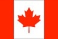

18

Lance Stroll (Montreal, Canadá; 29 de octubre de 1998), nacido como Lance Strulovitch, es un piloto de automovilismo canadiense. Ganó los campeonatos de Fórmula 4 Italiana en 2015 y Fórmula 3 Europea en 2016. Disputó las temporadas 2017 y 2018 con Williams en Fórmula 1, en 2019 y 2020 fue piloto de Racing Point. Actualmente es piloto de la escudería Aston Martin F1 Team.
Inició su carrera en el karting en 2008, dos años después fue contratado por el programa de desarrollo de la Scuderia Ferrari. Dio el salto a las fórmulas promocionales en 2014, debutando en el Campeonato de Italia de Fórmula 4 en 2014, donde se consagró campeón con 10 victorias.2 Al año siguiente disputó el Toyota Racing Series de Nueva Zelanda saliendo campeón, y disputó su primera temporada en el Campeonato Europeo de Fórmula 3 de la FIA, donde terminó quinto.2 Después de la temporada Lance dejó el programa de desarrollo de Ferrari para sumarse al equipo Williams como piloto tester.